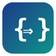

Programming Languages
Linguagens de Programação · Course 09022 · Computer Engineering
English. Lecture notes for an undergraduate course on the concepts that underlie programming languages and the paradigms that use them. The course follows Watt's structure and presents each concept as a construction of Core C++, a well behaved subset of C++17, with typing and evaluation rules in natural semantics and their implementation in Lean. The Lean compiler checks every piece of code in the notes when the site is built.
Português. Notas de aula de uma disciplina de graduação sobre os conceitos que fundamentam as linguagens de programação e os paradigmas que os usam. A disciplina segue a estrutura de Watt e apresenta cada conceito como uma construção de Core C++, um subconjunto bem comportado de C++17, com regras de tipos e de avaliação em semântica natural e a sua implementação em Lean. O compilador de Lean verifica todo o código das notas na construção do sítio.
The Core C++ interpreter and the blueprint of its semantics are at github.com/ChristianoBraga/corecpp and christianobraga.github.io/corecpp.
| Unit | Topic · Tema | Lectures · Aulas |
|---|---|---|
| I | Introduction · Introdução | 1 to 4 · 1 a 4 |
| II | Types · Tipos | in preparation |
| III | Storage and control · Armazenamento e controle | in preparation |
| IV | Abstraction · Abstração | in preparation |
| V | Encapsulation · Encapsulamento | in preparation |
| VI | Type systems · Sistemas de tipos | in preparation |
| VII | Paradigms · Paradigmas | in preparation |